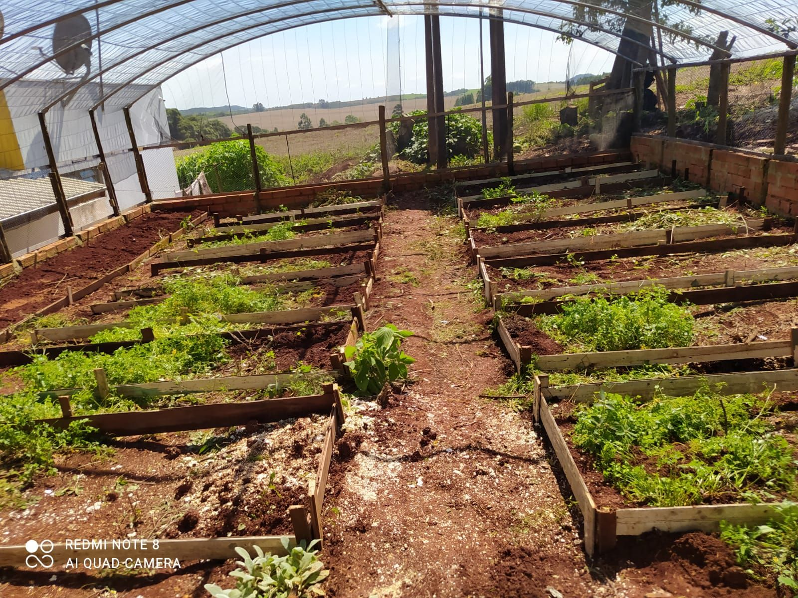
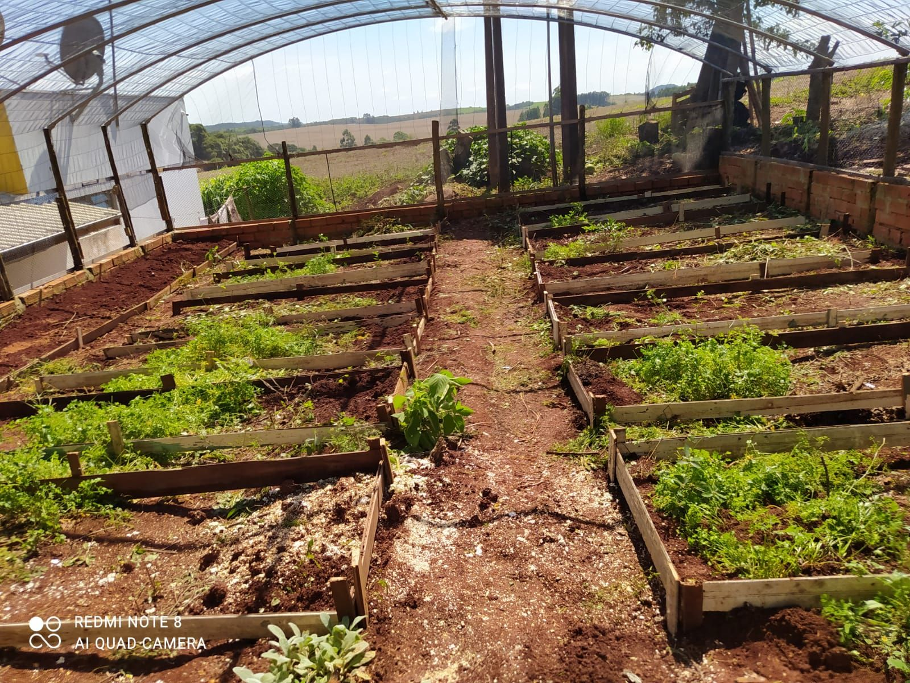

- Escola: Bom jesus
- Estudante: Kassiane P. Kunzel
A horta escolar foi realizada este ano no Colegio Estadual do Campo Bom Jesus,um projeto que envolveu alunos e professores. Em aulas diferencias conseguimos trabalhar com o projeto da horta

Começamos tirando os matos e ervas daninhas que tinham na horta, ao limpar o solo da horta soltamos a terra para ficar mais fácil para trabalhar depois.
Depois de ter frochado a terra os alunos fizeram um projeto de como iria ficar direcionado os canteiros os alunos deram várias ideias, o projeto foi feito junto com o professor de geografia que ajudou a decidir qual séria a melhor forma de deixar a direção dos canteiros

depois de ter finalizado o projeto tentamos na prática começamos marcando o solo para demarcar como iria ficar os canteiros logo em seguida começamos a fazer os canteiros usamos algumas ripas, pregos , a trena para medir o tamanho dos canteiros, a motocerra que foi utilizada pelo professor de geografia que estava auxiliando os alunos então conseguimos finalizar os canteiros que foi trabalhado pelos alunos da segunda série e da primeira série
 
>

> Depois dos alunos terem feito os canteiros fizeram algumas atividades em sala de aula incluindo poesias, experiências e etc.
O teste do ph foi feito pelos alunos da segunda série, foi um teste caseiro realizado com a professora de química, utilizando dois copos com a terra da horta, vinagre , bicarbonato,e água,.

ao realizar o teste, conseguimos ver que o solo estava muito acído, então fizemos pesquisas de como poderia ser adubado esse tipo de solo, logo em seguida adubamos a horta e deixamos pronto para o plantiu.
Caixa composteira é um projeto que os alunos da terceira série realizaram, essa caixa composteira foi feita com uma caixa de água, uma torneira, uma mangueirinha, e uma penera.
a caixa composteira foi feita para nossa horta escolar, com utilidade de descarte de alimentos e adubo orgânico , nela foi colocado folhas secas,minhocas e terra

Ao fazer a caixa composteira eles fizeram duas listas do que poderia ser colocado nesta caixa, e oque não poderia ser colocado.